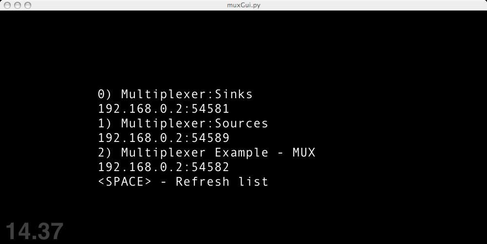
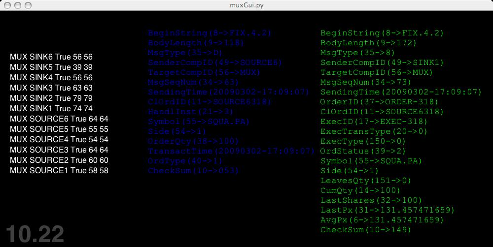
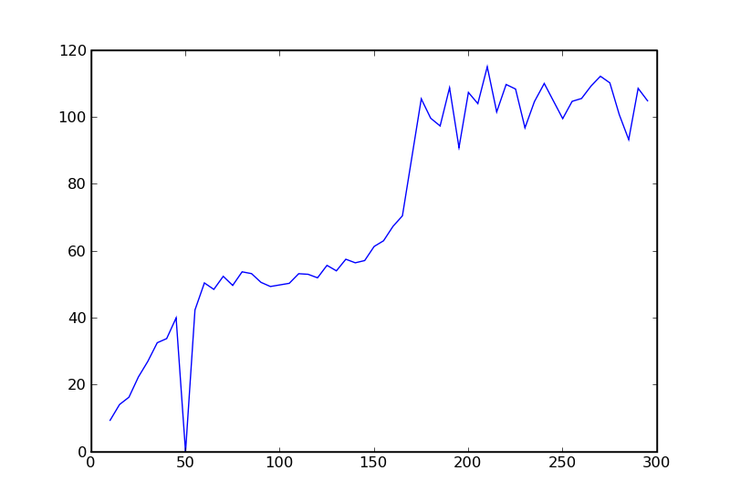

Code Examples¶
The following code examples live under the ‘examples’ directory.
Config¶
The main examples are all configured with yaml files. A number of recent projects have been using single ( or few ) yaml files as a means of app configuration, as opposed to the traditional multi-XML file approach. ( Ruby on Rails, Google AppEngine ).
Below is an example ‘acceptor’ config, with additional config sections for the manhole ( ssh interactive interpreter), and web listen ports used by other examples.
This configuration sets up 4 listening sessions:
default: {ConnectionType: acceptor, FileStorePath: store, HeartbeatInterval: 30, PersistRoot: ../persist/receive, BeginString: FIX.4.2 } sessions: - { SenderCompID: BROKER, Port: 1666, TargetCompID: ACME1 } - { SenderCompID: BROKER, Port: 1667, TargetCompID: ACME2 } - { SenderCompID: BROKER, Port: 1668, TargetCompID: ACME3 } - { SenderCompID: BROKER, Port: 1669, TargetCompID: ACME4 } manhole: listenPort: 4223 passwords: { admin : aaa } webServer: listenPort: 8101 nevow: listenPort: 8102
SimpleOrderSend¶
Simple example showing session creation and simple order submission reception. Example is in two parts, sender and receiver. The order in which they are started is not particularly important as the sender will continually attempt to reconnect if it does not succeed. The sender submits one order once it’s logged in.
SimpleOrderSend_manhole¶
A variant on the order sender, but also opens up a listening ssh port on both the sender and receiver applications so that a user can log on to the session and inspect/modify session state using the interactive python interpreter.
Multiplexer¶
A slightly more involved application showing use of the FIX Application objects and simple order routing. The example consists of three applications.
Sinks
The Sinks receive orders and simply fill each incoming order. The sinks.py application startes up multiple FIX Sessions listening on multiple ports, each of which will fill the orders sent to it.
Sources
The source.py application creates multiple initiating sessions. Each one begins sending orders once it has logged in.
MUX
The mux is the main point of the example. It accepts connections from the sources, and in turn initiates sessions to the sinks. It routes each incoming order depending on RIC extension to one of the sinks. ( i.e. each sink can be taken to represent a particular market). When fills return from the sink, they are re-routed back to the appropriate source.
The example is unrealistic in the sense that source order IDs are being used to route fills back to the appropriate source which in reality could never be assumed, but it serves as a good proof-of-principle.
Mux Gui¶
The multiplexer, source and sink are also configured to make their respective session managers available for connection via the twisted PB protocol.
Choosing A SessionManager to Connect To
When the muxGui starts up it broadcasts a multicast packet requesting any listening sessionmanagers to respond with the host and port over which a pb connection can be initiated to interact with the session manager.
Once connected, the gui displays the current status of each session covered by the session manager. In this case, the MUX-SINKXX entries show that all sessions initiated by the multiplexer are currently connected, and the MUX-SOURCEXX enties show that the incoming sessions are all connected as well. The Blue and red fields show the last order and execution message to have passed through the SessionManager.
The MUX SessionManager showing connected Sessions and Last Messages
TimeTrial¶
An application which should give an indication of realistic performance limits of the system.
This app ‘abused’ the FIX test request by spamming a receiving app with test requests, the id of which contains a pickle of the sending time, and current message frequency when the test requets is send. The sending application makes a note of the arrival time of each request, and the optimal freuency that occurs. On the test hardware used the system scales linearly up to approximately 100 msgs per second, at which point any attempts to send faster result in the system backing up.
It’s important to note what exactly this figure represents. It is a steady state message rate ( not burst rate), and when a frequency of 100 is states, it means that the system can send a message, haev another engine process the test request, reply, and have the sending app receive the reply.
